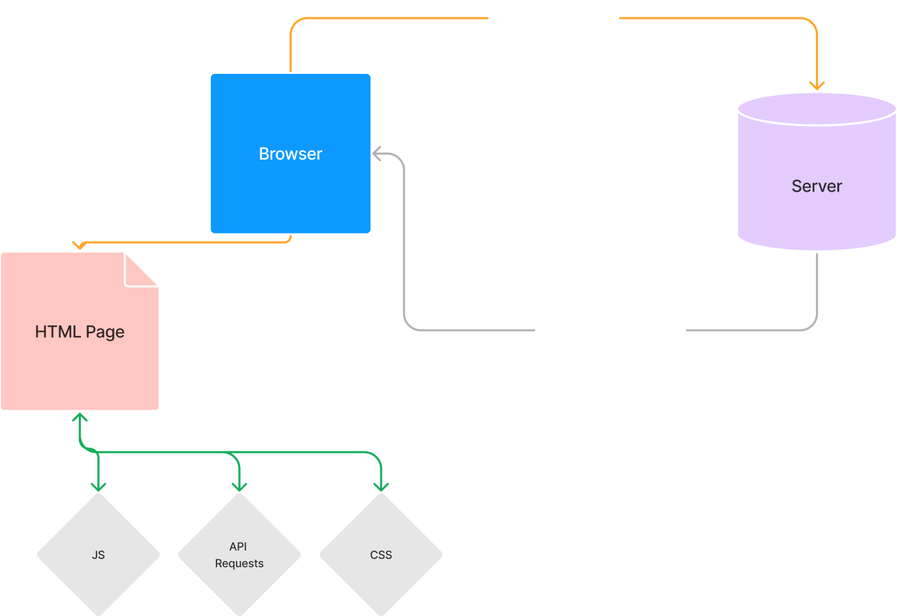
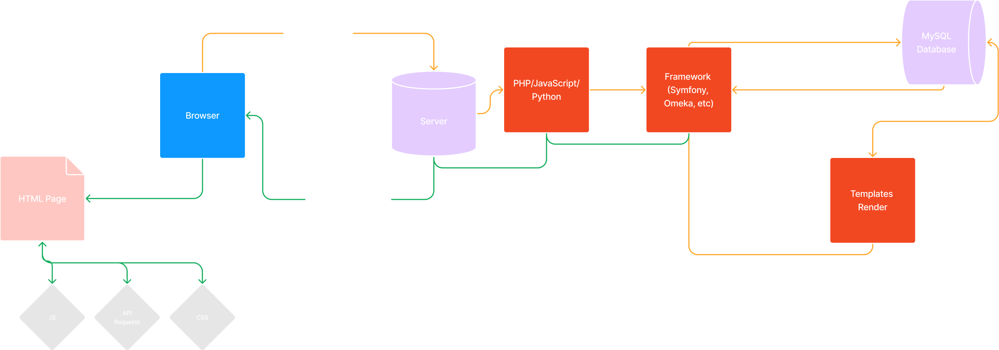

Processing and Products
DH@Guelph 2023
Key Terms
- HTML (HyperText Markup Language): The text format that underlies every website (i.e. the content and structure -- a paragraph, a heading)
- CSS (Cascading Stylesheets): The formatting for your website (i.e. paragraphs should have a blue border; headings should be in 30pt font)
- JavaScript (JS): The added functionality for your website (i.e. clicking a button should make a popup; zooming images; maps)
- All of these run in the browser*
Key Terms
- Building: The conversion from source data to HTML
- Server: The external place where a website is available via the internet
- Hosting: The agency responsible for the server
What Appears To Happen
What Actually (Usually) Happens
Static Websites
- No on-the-fly server side processing
- HTML + CSS + JS
How Static Websites Work
But Why?
- HTML + JS + CSS are standards
- We can feel confident that they will persist
- Computational power is available to do this simply
- Set it and forget it!
CERN: The First Website (it still works!)
http://info.cern.ch/hypertext/WWW/TheProject.html
Minimal Computing!= Minimalist Computing
Minimal Computing!= Minimalist Computing
I prefer to approach minimal computing around the question “What do we need?” If we do so, our orientations vis-a-vis ease of use, ease of creation, increased access and reductions in computing—and by extension, electricity—become clearer.Alex Gil, "The User, the Learner and the Machines We Make"
- What do we need? (Gil)
- What don't we need? (Sayers)
- What can we preserve? (Endings)
- Who uses it?
- Who builds it?
- Who maintains it?
- Who archives it?
- Who benefits?
- Who doesn't?
Minimal computing = a set of concerns surrounding:
- Sustainability
- Usability
- Maintainability
Minimal Design Reduce the need to update/modify the structure or layout of a project in order to focus on content production and to increase the likelihood of project persistence
Minimalist Design Reduce the use of features to highlight a project's fundamental components across platforms/devices
Minimal WYSIWYG Reduce the use of What You See Is What You Get (WYSIWYG) interfaces to decrease resource demands, increase awareness of programming and markup processes, and also increase individual focus on writing
Minimal Dependencies Reduce reliance on scripts, databases, libraries, versions, and software to decrease resource demands and processing time
Minimal Maintenance Reduce dependencies and the use of features to decrease the labor of updating, moderating, and stewarding a project over time
Maximum Ephemerality Reduce an impulse to inscribe, measure, or visualize with technologies in order to increase the likelihood of experimentation and collective participation
Minimal Use Reduce the use of natural resources and technologies (especially hardware, middleware, and peripherals) to decrease environmental effects and energy consumption
Minimal Consumption Reduce arguments premised on technological progress, the early adoption/implementation of technologies, and the treatment of computing as work (to create products) in order to increase deliberation, thoroughness of research, and the likelihood of informed decisions
Minimal Obsolescence Reduce turnover of technologies, standards, and formats to increase reuse and decrease waste/discards
Minimal Presence Reduce the use of laptops, desktops, and other computers in order to prototype with low-tech materials (clay, paper, pencils), decrease reliance on automation, and increase comparative studies (across digital and analog media)
Minimal Visibility Reduce the perceived intervention of technologies to facilitate interaction as well as the production/extraction of data from those interactions/behaviors (Internet of Things)
Maximum Access Reduce the use of proprietary technologies and paywalls to increase access to content, data, and/or source files
Maximum Accessibility Through shared guidelines and frequent user testing, reduce the use of features that are difficult to see, read, hear, translate, use, navigate, process, store, or find toward access by everyone and to also increase the overall quality and consistency of projects
Maximum Justice Reduce the use of technological, cultural, social, and economic barriers to increase entry, access, participation, and self-representation in computing and to also build systems/projects premised on social justice and difference, not white supremacy and settler colonialism
Minimal Learning Curve Reduce the experience assumed or required to participate in computing and technological work
Maximum Negotiation Reduce the rigidity of form, composition, and use to increase the personalization, adaptability, responsiveness, and/or robustness of technologies
Minimal Internet Reduce reliance on the internet for communication, exchange, and participation to account for or privilege local conditions
Minimal Connectivity Reduce or eliminate the default assumption that internet access is evenly distributed in order to account for material and social conditions of communications and exchange
Minimal Surveillance Reduce the use of sensors, computer vision, cookies, and other tracking mechanisms to increase privacy and security and to decrease harassment and hacks
Minimal Vulnerabilities Reduce attack vectors (e.g., cross-site scripting, SQL injections, and directory traversals) of projects to decrease likelihood of hacks and harassment
Minimal Externals Reduce dependency on external groups or mechanisms to produce, exchange, and circulate your own projects and content
Minimal Automation Reduce use of mechanisms that (magically) turn input into output in order to increase awareness of how this becomes that or how algorithms/tools make decisions
Minimal Space Reduce the physical space dedicated to hardware and workstations to increase the flexible use, variability, and modularity of that space
Maximum Mobility Reduce dependency on fixed technologies (e.g., desktops plugged into walls) to increase movement, performance, and participation across events and settings
Minimal Technical Language Reduce the use of specialized language to increase participation and engagement with shared technocultural problems
Not tied to a particular methodology or technology
...but people have gravitated toward static websites
How Do People Make Static Sites?
- Artistinally (writing them out by hand)
- (But don't do that)
- Exporting from something else
- Using a static site builder
Github

Github
- Broad audience (not just programmers!)
- Free and robust version control
Github Pages
- Free service on Github available on every repository that hosts and serves your static website (within limits)
- Well documented setup (with many tutorials available)
- Uses Markdown (content) and YAML (metadata)
Markdown
# A single hash is a first level heading
Paragraphs are just written in regular blocks.
New lines make new paragraphs, and you can **emphasize** words for _emphasis_.
## Two hashes is a sub heading
##### Five hashes is a sub-sub-sub-sub-sub heading
Unordered lists are denoted with asterisks:
* Parsley
* Peppers
* Cabbages
* Celery
Ordered lists start with a number:
1. The challenge
1. Grab a friend
1. Negotiate a peace
Example projects / DH Themes
Ed: A Jekyll Theme for Minimal Editions
https://minicomp.github.io/ed/
---
layout: poem
title: Delayed till she had ceased to know
author: Emily Dickinson
editor: Alex Gil
source: "Bartleby.com"
---
- DELAYED till she had ceased to know,
- Delayed till in its vest of snow
- {:.indent-2}Her loving bosom lay.
- An hour behind the fleeting breath,
- Later by just an hour than death,—
- {:.indent-2}Oh, lagging yesterday!
- Could she have guessed that it would be;
- Could but a crier of the glee
- {:.indent-2}Have climbed the distant hill;
- Had not the bliss so slow a pace,—
- Who knows but this surrendered face
- {:.indent-2}Were undefeated still?
- Oh, if there may departing be
- Any forgot by victory
- {:.indent-2}In her imperial round,
- Show them this meek apparelled thing,
- That could not stop to be a king,
- {:.indent-2}Doubtful if it be crowned!
Wax
https://minicomp.github.io/wax/
Collection Builder
https://collectionbuilder.github.io/
Other Hosts / Cloud Services You Might Hear About
- Amazon S3
- Google Azure / Firebase / Sites
- Blue Ocean
- Heruko
- Netlify
But...
- The above *may* cost money (though not necessarily)
- And can be a bit convoluted (lots of features for a lot of different needs)
Frameworks
- You are not bound to any one language, framework, et cetera
- Any language can produce HTML (though some are better than others)
Some Popular Frameworks
- Next.js (JavaScript)
- Eleventy (aka 11ty) (JavaScript)
- Jekyll (Ruby)
- Hugo (JavaScript)
Resources
- Github Pages: https://pages.github.com/
- GO::DH MinComp: http://go-dh.github.io/mincomp/
- Roopika Risam, "Micro DH": https://dh2017.adho.org/abstracts/196/196.pdf
- The Endings Project: https://endings.uvic.ca